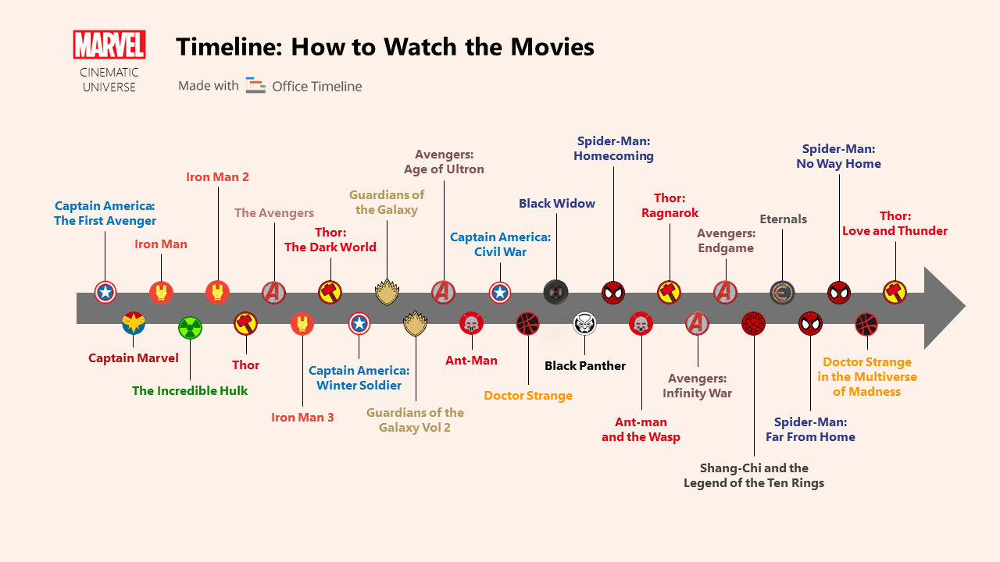

Marvel Studios releases its films in groups called "Phases", with the first three phases collectively known as "The Infinity Saga" and the following three phases as "The Multiverse Saga". The first MCU film, Iron Man (2008), began Phase One, which culminated in the 2012 crossover film The Avengers.
Phase Two began with Iron Man 3 (2013) and concluded with Ant-Man (2015).
Phase Three began with Captain America: Civil War (2016) and concluded with Spider-Man: Far From Home (2019).Phase Three was ended with the biggest and the largest crossover in the history of MCU which was Avengers: Endgame(2019).
Phase Four began with Black Widow (2021) and concluded with Black Panther: Wakanda Forever (2022). Ant-Man and the Wasp: Quantumania (2023) began Phase Five, which will end with Blade (2024), and Phase Six will begin with Deadpool 3 (2024).
Phase Six and "The Multiverse Saga" will conclude with Avengers: The Kang Dynasty (2025) and Avengers: Secret Wars (2026).

Timeline of Marvel Cinematic Universe (MCU)